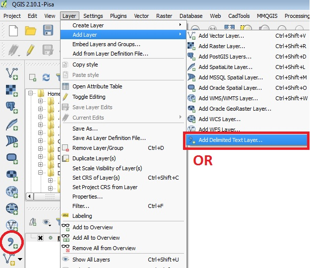
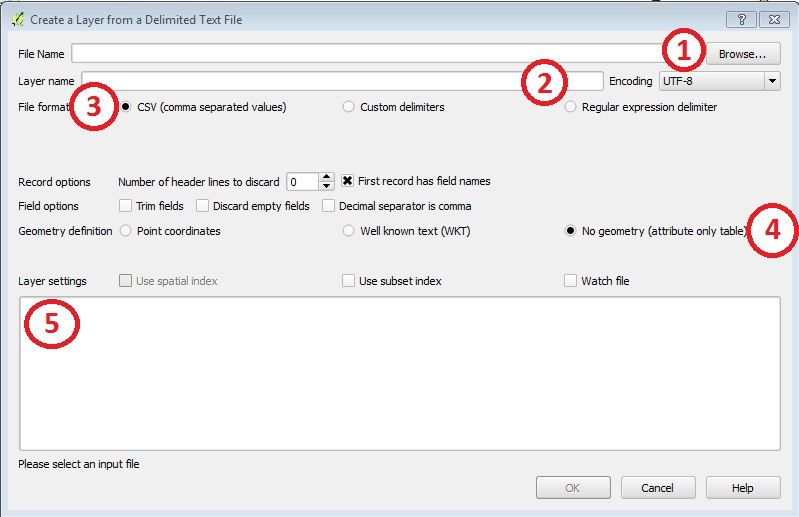

Convert CSV to Points
Once the csv files are formatted properly, you can add them into QGIS.
- Click on the "Layer" menu, mouse-over "Add Layer" and click on "Add Delimited Text Layer..." or click on the "Add Delimited Text Layer" icon in the left column of QGIS. 
- Here is an outline of the most common fields needed to be changed.
- Browse - click on Browse and find the folder where the csv file is saved and open the file.
- Layer name - the name of the CSV will show up here.
- File format - depending on the version of QGIS you are using, you may need to verify the file format
- Geometry definition - If you have x, y coordinates you will choose the "Point coordinates" option. Verify the X Field is pointing to your Longitude field and the Y Field is pointing to your Latitude Field. If you have a table with no x,y coordinates you will choose the "No Geometry" option
- Layer settings - you will see a preview of the table. Verify everything on the table. 
- Click OK.